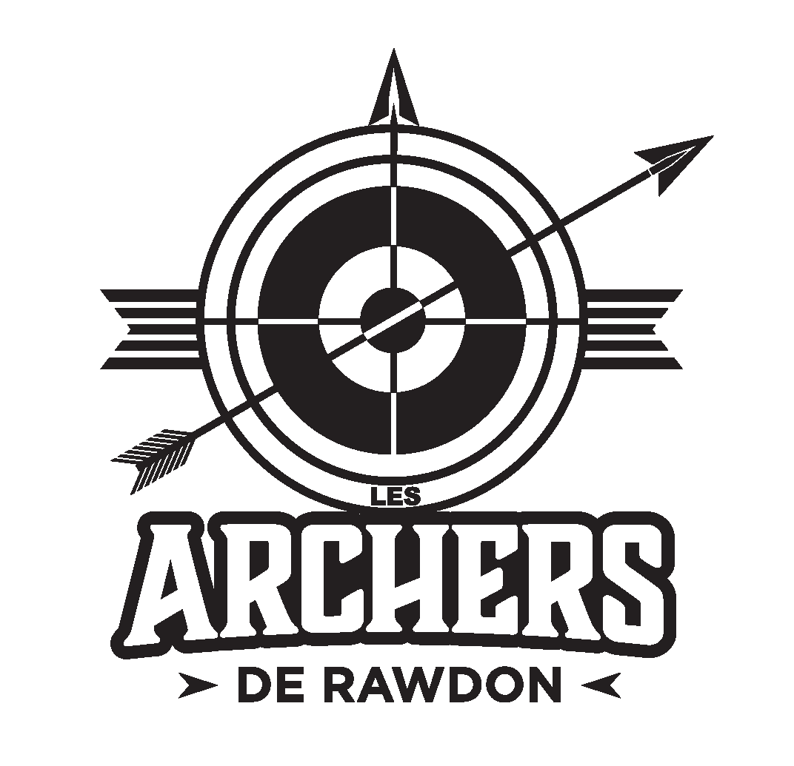
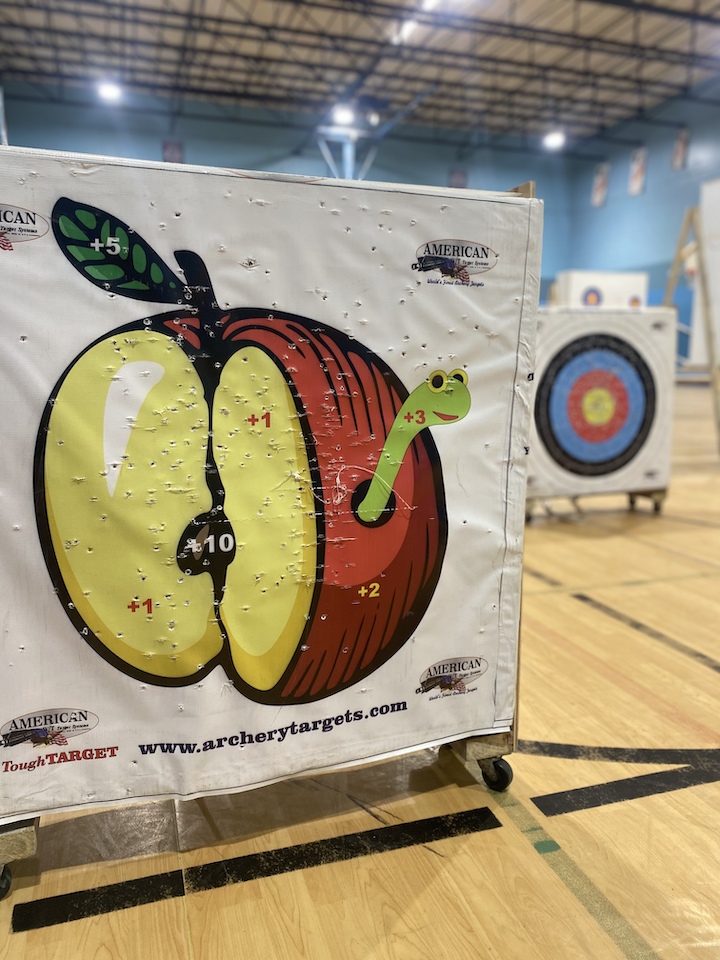
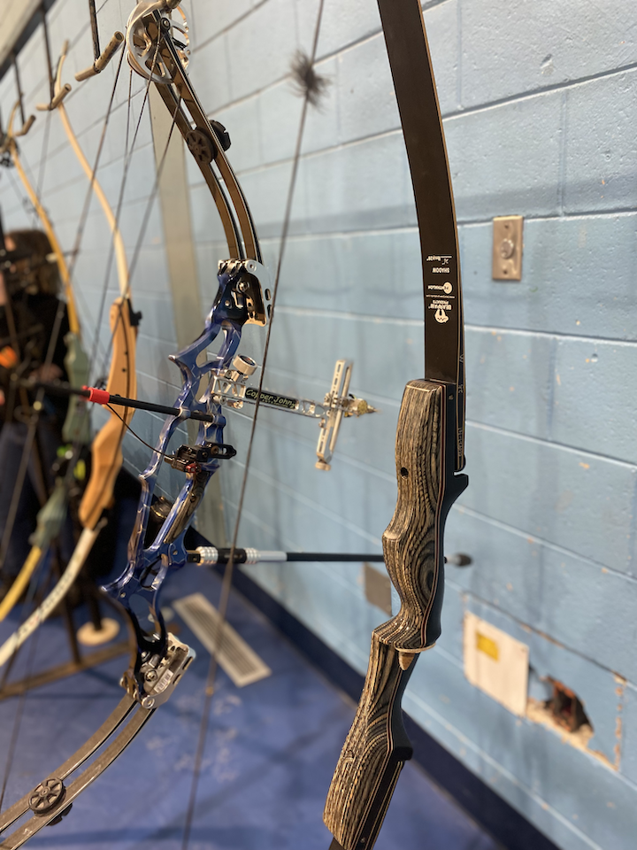
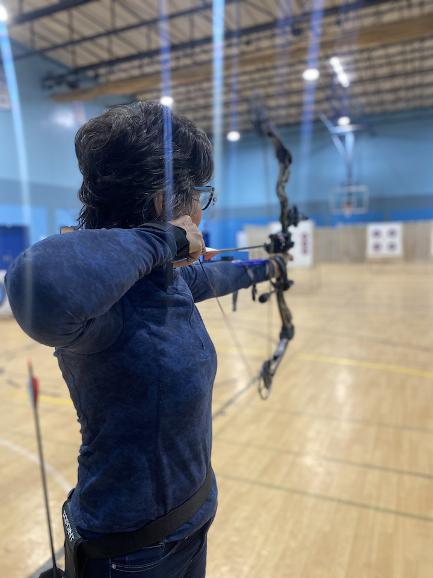
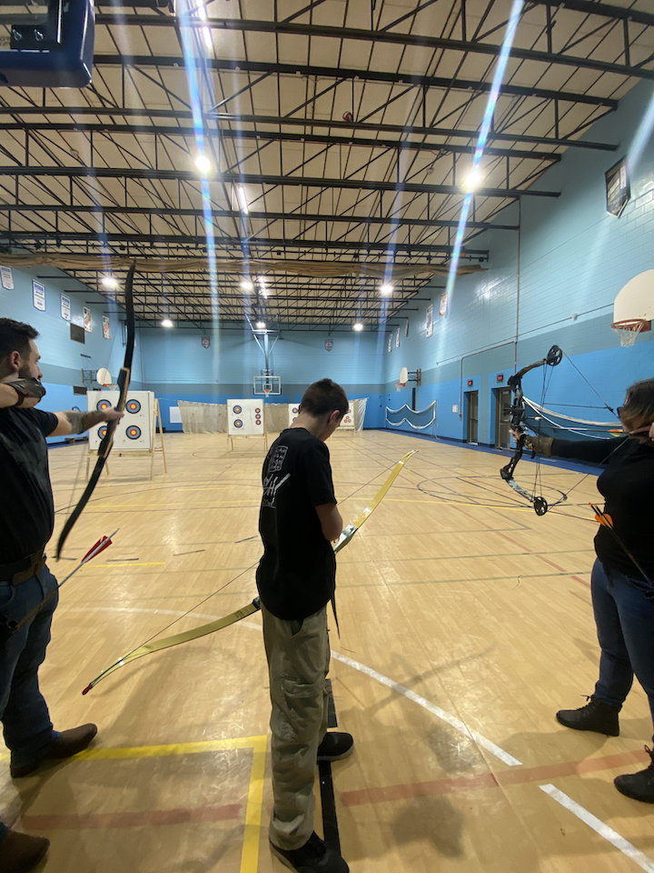
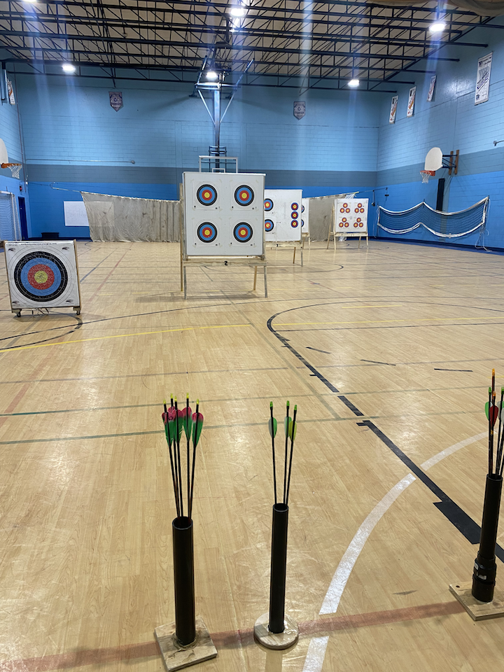
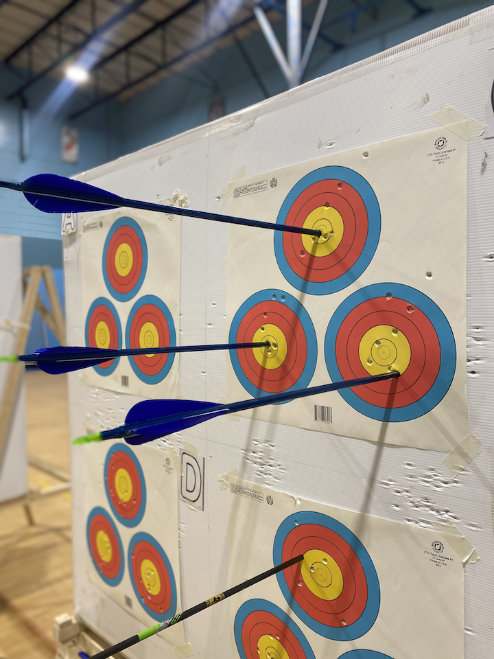
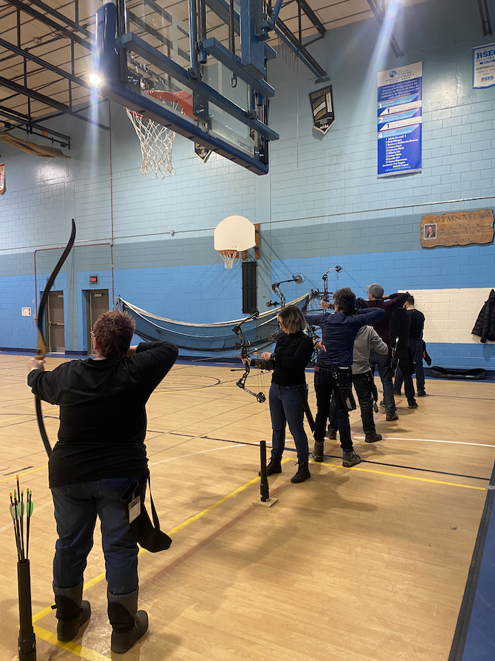
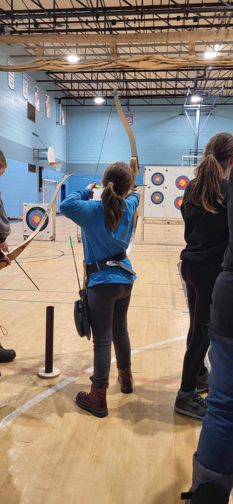
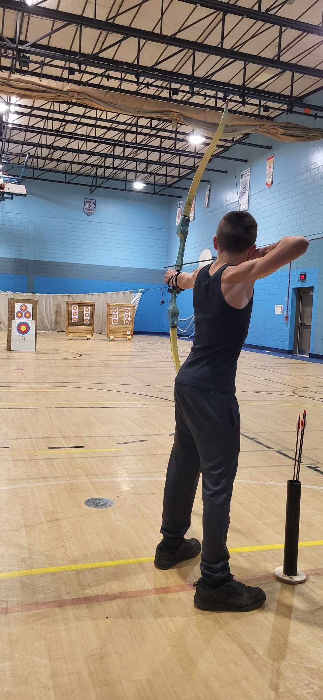

Le tir à l'arc au cœur de la Lanaudière

Que vous soyez une personne curieuse ou passionnée par le tir à l’arc, vous trouverez parmi nous des gens engagés pour vous former. Les séances de tir libre sont pour les archers de tous niveaux.
Pratiques : Tous les mardis et vendredis de 19h00 à 21h00 à l’École des Chutes de Rawdon.
Initiation gratuite pour les nouveaux membres. Cours obligatoire (35$) pour les débutant.e.s.
| Catégorie | Annuel récréatif | Annuel compétitif | Semi-annuel (sept-déc) |
|---|---|---|---|
| Adulte | 95$ | 123$ | 55$ |
| Moins de 20 ans | 85$ | 107$ | 55$ |
* Les tarifs incluent l'adhésion à la Fédération de Tir à l'Arc du Québec.
Cours obligatoire (35$) pour les débutant.e.s. qui souhaitent devenir membre.
Courriel :
lesarchersderawdon@gmail.com








